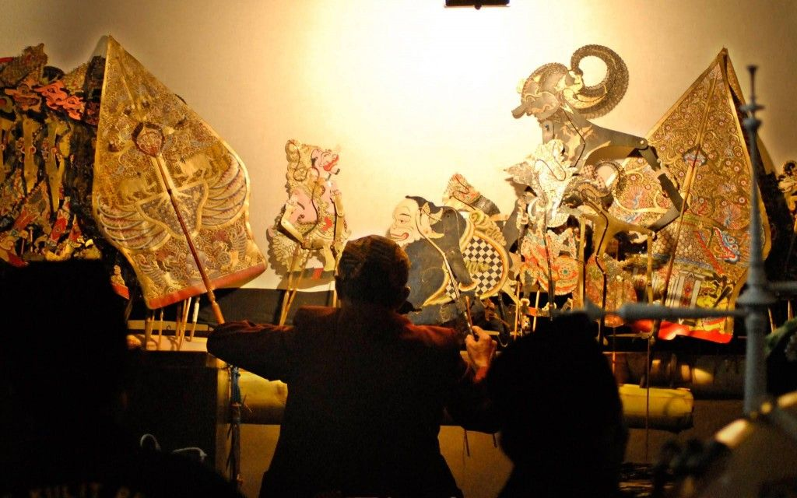
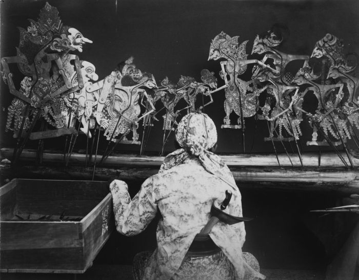

Sebuah Proyek oleh Kelompok 18
Mengenal Jati Diri Bangsa
Menyelami makna dan filosofi dalam setiap lakon Wayang Indonesia.
Selamat datang di NUANSA WAYANG
Menampilkan wayang Indonesia
Hal Yang Perlu Kamu Ketahui Mengenai Wayang
Menonton Wayang: Benarkah penonton bisa melihat dari sisi depan maupun belakang?
Temukan lebih banyak fakta tentang wayang

AWAL MULA PERTUNJUKAN

Di Balik Layar Pertunjukan: Mengenal Perangkat Sakti Dalang
Perlengkapan pementasan wayang
JEJAK LELUHUR
Mengunjungi Masa Lalu:
Sekilas sejarah wayang
Aksesoris Wayang
Bagaimana Wayang berdandan untuk membuat kalian terkesan.


Apakah Kamu Tahu Wayang Di Indonesia Ada Berapa?
Rencana pelajaran yang dapat diunduh untuk digunakan di kelas atau diberikan kepada siswa untuk dikerjakan sesuai kecepatan mereka sendiri
Ragam Warisan Budaya: Mengulik Puluhan Jenis Wayang Nusantara
Telusuri Ragam WayangNama Wayang
Asal:
Pembuat:
Tanggal Dibuat:
Medium:
Penjelasan: